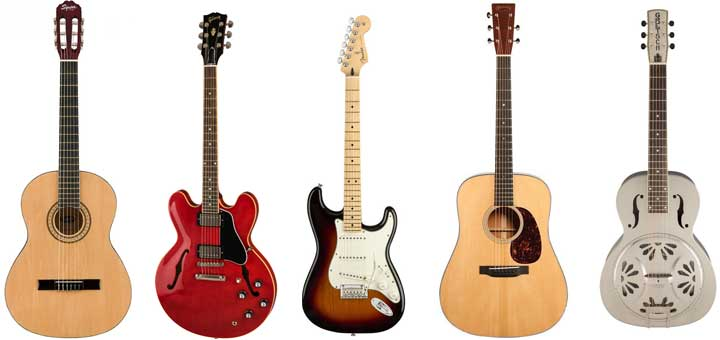
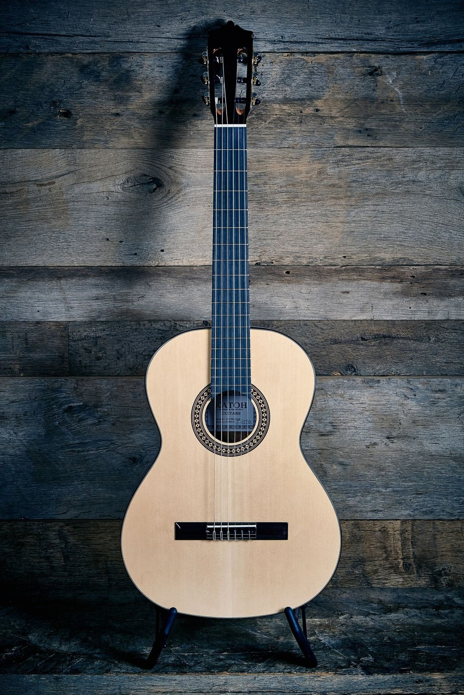
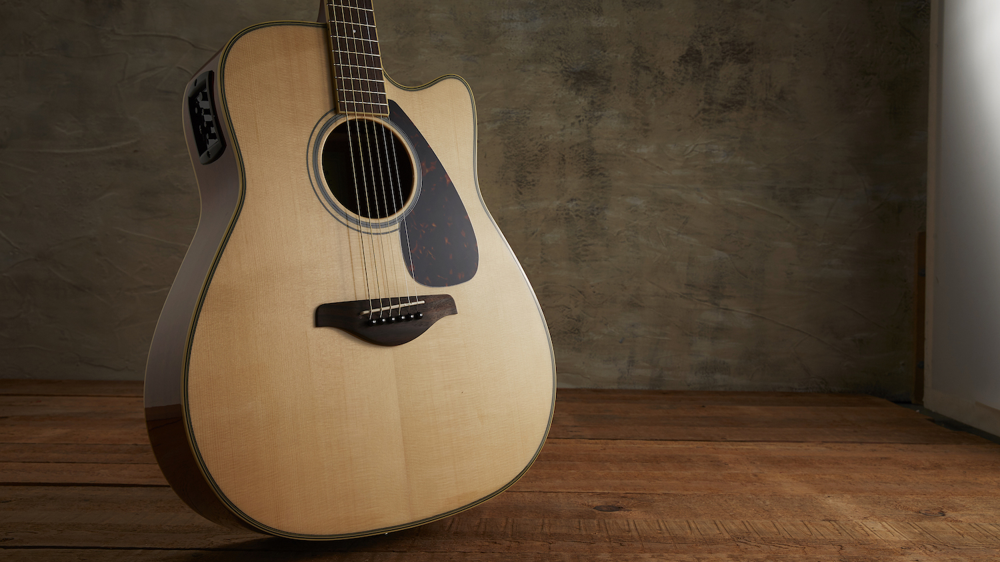
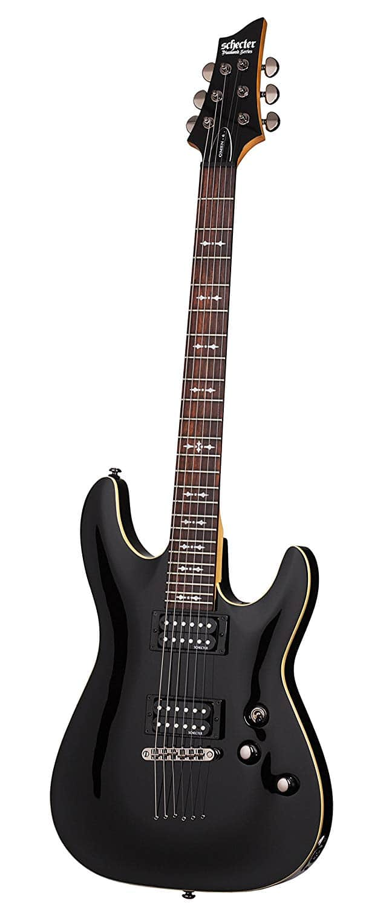
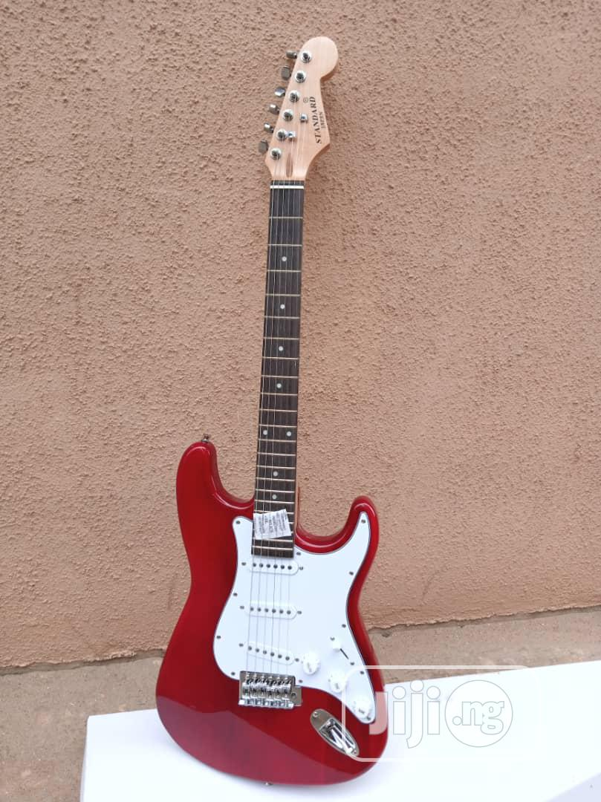

Guitar Types


Classic : The classical guitar is a 6-stringed plucked string instrument from the family of instruments called chordophones. The classical guitar has comprehensive right hand technique, which allows the soloist to perform complex melodic and polyphonic material.

Acoustic guitar:is a guitar that produces sound acoustically by transmitting the vibration of the strings to the air—as opposed to relying on electronic amplification . The sound waves from the strings of an acoustic guitar resonate through the guitar's body, creating sound. This typically involves the use of a sound board and a sound box to strengthen the vibrations of the strings.

Rhythm guitar:is a technique and role that performs a combination of two functions: to provide all or part of the rhythmic pulse in conjunction with singers or other instruments; and to provide all or part of the harmony, i.e. the chords, where a chord is a group of notes played together. Therefore, the basic technique of rhythm guitar is to hold down a series of chords with the fretting hand while strumming rhythmically with the other hand. More developed rhythm techniques include arpeggios, damping, riffs, chord solos, and complex strums.

Lead guitar: is a musical part for a guitar in which the guitarist plays melody lines, instrumental fill passages, guitar solos, and occasionally, some riffs within a song structure. The lead is the featured guitar, which usually plays single-note-based lines or double-stops. In rock, heavy metal, blues, jazz, punk, fusion, some pop, and other music styles, lead guitar lines are usually supported by a second guitarist who plays rhythm guitar, which consists of accompaniment chords and riffs.